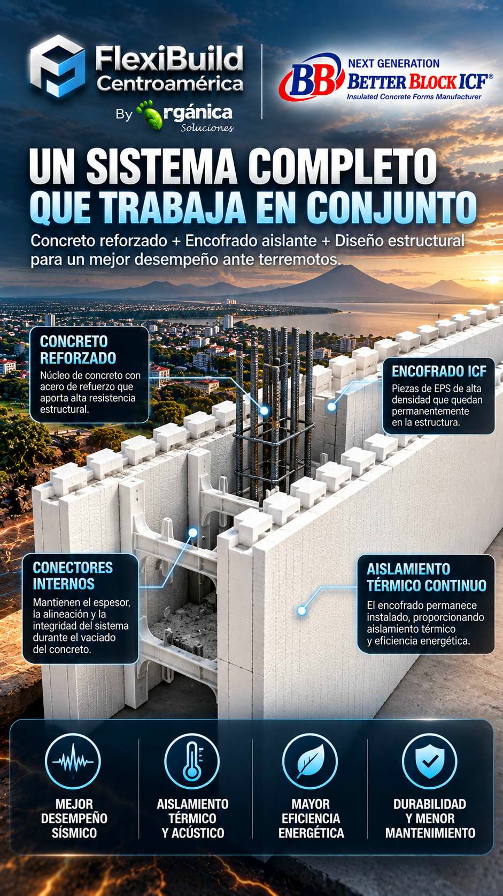
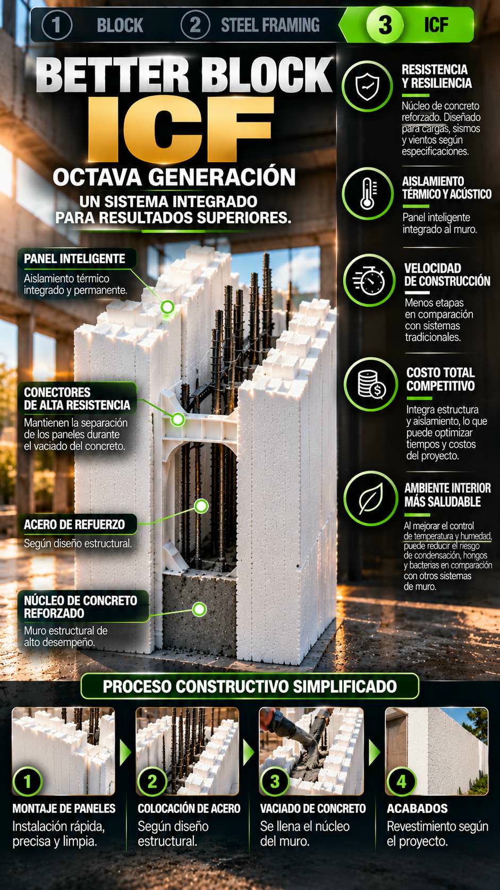
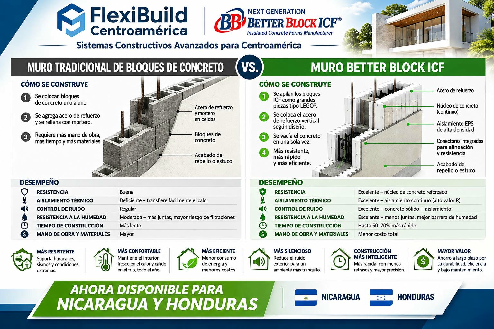

El encofrado queda integrado
Las caras de EPS no se retiran después del colado: forman parte de la envolvente aislante del muro y ayudan a reducir la transferencia de calor a través de la pared.
Sistema Constructivo ICF
FlexiBuild ofrece el Sistema Constructivo ICF de octava generación para proyectos en toda Centroamérica. Better Block ICF® es un sistema de encofrado permanente: sus paneles aislantes permanecen instalados alrededor de un núcleo monolítico de concreto reforzado. Brinda confort térmico y acústico y ayuda a proteger el núcleo y el acero de refuerzo de la exposición directa al sol, la humedad y otros factores ambientales, contribuyendo a preservar las características estructurales de la construcción por más tiempo. Está concebido para muros de alto desempeño ante demandas sísmicas y de viento huracanado, definidas mediante el diseño de cada proyecto. FlexiBuild puede cotizar la construcción por encargo; refuerzo, ubicación, logística y ejecución se revisan para cada obra.
FlexiBuild ICF® · productos
Consulte el sistema constructivo ICF FlexiBuild en sus opciones de núcleo de 10, 15 y 20 cm, sus componentes, accesorios compartidos y el sistema de entrepisos aislantes.
Ver el sistema constructivo ICF →Sistema Constructivo ICF · Better Block ICF®
Las formas de EPS funcionan como molde durante el colado y permanecen integradas en ambas caras del muro. En su interior se coloca el acero de refuerzo y se vierte el concreto conforme al diseño estructural. Better Block ICF® es un sistema de encofrado permanente de octava generación: el panel aislante queda instalado para brindar salud, confort térmico y acústico y ayudar a proteger el núcleo monolítico de concreto y el acero de refuerzo de la exposición directa al sol, la humedad y otros factores ambientales. Esta protección contribuye a conservar la estructura y sus características por más tiempo. Los acabados e impermeabilización se especifican para cada proyecto.
Las caras de EPS no se retiran después del colado: forman parte de la envolvente aislante del muro y ayudan a reducir la transferencia de calor a través de la pared.
El núcleo se construye colocando acero de refuerzo y concreto dentro del encofrado. El espesor, el refuerzo, las conexiones y la secuencia de colado se definen para cada proyecto.
Las webs plásticas internas y las guías de corte del sistema ayudan a conservar la geometría y el espaciamiento de las caras. El refuerzo y los detalles se instalan según los planos.
La ficha técnica publicada por Better Block indica EPS con densidad nominal de 26 kg/m³ y núcleos de concreto de 10, 15 o 20 cm. Son datos del fabricante; la capacidad estructural, el aislamiento y el desempeño final dependen del diseño completo, los materiales, la instalación y los requisitos locales. Consultar la ficha técnica de Better Block.
Sistema ICF · beneficios
El encofrado aislante permanece instalado. Ayuda a proporcionar confort térmico y acústico y reduce la exposición directa del núcleo monolítico de concreto y del acero de refuerzo a factores ambientales.
El doble panel aislante continuo ayuda a reducir los puentes térmicos y a mantener temperaturas interiores más estables. Según el clima, el diseño, el uso y los equipos, puede reducir el consumo de climatización hasta en un 60%. La masa del concreto y el EPS también ayudan a reducir la transmisión del ruido exterior y a mejorar el confort acústico.
Vista general del sistema y sus aplicaciones. El desempeño depende del diseño y la ejecución de cada proyecto.
El muro continuo de concreto reforzado puede diseñarse para responder a las demandas sísmicas y de vientos huracanados del sitio. El encofrado permanente ayuda a proteger el concreto monolítico y el acero de refuerzo de la exposición directa al sol, la humedad y otros factores ambientales, contribuyendo a preservar la estructura y su desempeño a largo plazo.
Representación conceptual del sistema ante fuerzas sísmicas; el diseño estructural específico determina el desempeño.

Los paneles modulares y conectores integrados pueden simplificar el montaje y coordinar el encofrado, el refuerzo y el concreto. La secuencia, el plazo, los recursos y el desperdicio dependen de la planificación y las condiciones de cada obra.
Infografía del montaje y los componentes del sistema; los detalles se especifican para cada proyecto.
La durabilidad potencial y el confort pueden aportar valor durante el ciclo de vida del edificio. El costo total y el valor de reventa dependen del proyecto, el mercado, el mantenimiento y la calidad de ejecución; no son resultados garantizados.
Comparación conceptual proporcionada por FlexiBuild; no constituye una prueba independiente ni una garantía de desempeño.

El aislamiento térmico y la masa del muro pueden favorecer temperaturas más estables y reducir parte del ruido exterior. La ventilación, el control de humedad y la prevención de moho también requieren diseño adecuado, impermeabilización y mantenimiento.
Resumen visual del sistema y su proceso constructivo; el tiempo y los resultados varían según cada obra.
Comparativa para Nicaragua, Honduras y Centroamérica
En la región, el block de concreto es un método familiar. Better Block ICF® integra en una misma solución el encofrado permanente de EPS, el aislamiento continuo y un núcleo monolítico de concreto reforzado. Esa diferencia puede simplificar la secuencia de obra y mejorar el confort térmico y acústico; el desempeño y el costo final se calculan para cada proyecto.

Comparación visual de la construcción, los componentes y los beneficios principales de cada solución.
La tabla resume diferencias típicas de configuración. El diseño estructural, los acabados y los resultados varían según materiales, especificaciones y condiciones de la obra.
| Aspecto | Block convencional | Better Block ICF® |
|---|---|---|
| Cómo se construye | Unidades de block se colocan por hiladas; refuerzo, relleno, mortero y acabados se especifican en el diseño. | Se ensamblan paneles ICF, se instala el refuerzo y se vacía concreto en el núcleo; el encofrado aislante permanece integrado al muro. |
| Estructura | La capacidad depende de las unidades, juntas, refuerzo, relleno, confinamiento y conexiones detalladas. | Núcleo monolítico de concreto reforzado que puede calcularse para las cargas sísmicas y de viento del sitio. |
| Aislamiento y confort | El desempeño térmico y acústico depende del tipo de block, los acabados, las juntas y el aislamiento adicional especificado. | Paneles continuos de EPS integrados al muro ayudan a reducir la transferencia de calor y la transmisión de ruido. |
| Secuencia de obra | Mampostería por unidades, con refuerzo y relleno según planos y etapas de trabajo. | Montaje modular, colocación del refuerzo y vaciado del concreto; puede coordinar varias tareas en una secuencia integrada. |
| Humedad y vida útil | Juntas, recubrimientos, drenaje e impermeabilización requieren detalles correctos. | El encofrado permanece instalado y ayuda a proteger el núcleo y el acero de la exposición directa; los acabados e impermeabilización siguen siendo parte del diseño. |
| Costo y plazo | Se cuantifican según planos, mano de obra, acabados, logística y condiciones locales. | Se comparan sobre el costo total del proyecto: sistema, refuerzo, concreto, mano de obra, logística, plazo y consumo en operación. |
Las cifras de ahorro, rapidez y costo que aparecen en la infografía son referenciales; no representan un resultado garantizado para todos los proyectos. La comparación justa utiliza el mismo diseño, ubicación, acabados y alcance para ambos sistemas.
Para proyectos en Nicaragua, Honduras y el resto de Centroamérica, FlexiBuild puede revisar planos y ubicación para comparar la configuración ICF con la solución de block prevista.
Sistema ICF · Nicaragua y Centroamérica
El sistema ICF de octava generación se ofrece para evaluación y suministro en toda Centroamérica. Si el proyecto también requiere ejecución, FlexiBuild puede revisar y cotizar ese alcance por separado, según ubicación, viabilidad, logística y requisitos locales.
La construcción, consultoría y acompañamiento técnico no están incluidos automáticamente en la compra de materiales. Alcance, responsables y precio se acuerdan para cada proyecto.
Ver servicio de construcción →Cómo funciona
ICF significa Insulated Concrete Forms (encofrados aislantes para concreto). Los componentes forman una cavidad en la que se dispone el acero de refuerzo y se vierte concreto. El encofrado aislante permanece integrado al muro. La configuración, el refuerzo, el concreto y los detalles de conexión deben definirse según los planos estructurales, las instrucciones del fabricante y las normas aplicables.
La resistencia sísmica y al viento se establece mediante el diseño estructural del proyecto, con espesores de muro, refuerzo, conexiones, cimentación y anclajes especificados para las cargas y normas locales.

Proceso de evaluación
Uso, ubicación, alturas y distribución.
Planos, cargas, normativa y detalles.
Componentes, concreto y logística.
Alcance, suministro y ejecución.
Experiencia especializada en obra ICF
Más de 25 años de experiencia en construcción con sistemas ICF en Montana, Estados Unidos.
FlexiBuild Centroamérica, en alianza con el Sr. Brent Shober, da un paso al frente al sumar a su propuesta a quien se presenta como el constructor con más experiencia en el Sistema Constructivo ICF para Centroamérica. Brent cuenta con más de 25 años de trayectoria en Montana, Estados Unidos, y comparte su experiencia en diseño, instalación, vaciado de concreto y ejecución integral del sistema ICF. Esta colaboración permite explorar apoyo especializado para proyectos en Nicaragua y trabajo conjunto con empresas constructoras.

En obra
Video compartido por el Sr. Brent Shober · Cortesía de Shober Builders INC.


Modalidades disponibles
Cada servicio se define y cotiza por separado según ubicación, duración, alcance y necesidades del proyecto. No es gratuito ni está incluido automáticamente en la compra de materiales ICF. Diseño, permisos, dirección profesional y responsabilidades de ejecución se establecen expresamente para cada proyecto.
Galería de imágenes
Estas imágenes sirven como referencias iniciales. La solución final, sus dimensiones, materiales y especificaciones se definen según el proyecto y la evaluación técnica correspondiente.

Sistema de encofrado aislante para construir muros de concreto reforzado; consulte su aplicación en el proyecto.

Evalúe diseño estructural, refuerzo, concreto y condiciones del sitio con profesionales responsables.

Referencias visuales del sistema ICF para analizar aplicaciones residenciales y comerciales.
Comparta país, ubicación, planos y uso previsto para iniciar la revisión.
Preguntas frecuentes
ICF significa Insulated Concrete Forms: encofrados aislantes que forman una cavidad para el acero de refuerzo y el concreto y permanecen integrados al muro.
Better Block ICF® es un sistema de encofrado permanente de octava generación. Sus paneles aislantes de EPS permanecen alrededor del núcleo monolítico de concreto reforzado y aportan aislamiento térmico.
Al permanecer instalado, el encofrado ayuda a reducir la exposición directa del núcleo de concreto y del acero de refuerzo al sol y al ambiente. Esto puede contribuir a la durabilidad del muro; el diseño debe incluir los detalles de impermeabilización y protección correspondientes.
Sí. Better Block ICF permite construir muros continuos de concreto reforzado que pueden diseñarse para resistir las demandas sísmicas y de viento huracanado de cada ubicación. El encofrado permanente ayuda a proteger el núcleo monolítico y el acero de refuerzo de la exposición directa al sol, la humedad y otros factores ambientales, contribuyendo a conservar la estructura por más tiempo. El cálculo define el espesor del núcleo, el refuerzo, las conexiones, la cimentación y los anclajes de cubierta y aberturas conforme a las cargas y normas locales.
El aislamiento continuo puede ayudar a estabilizar la temperatura interior y reducir el consumo de climatización. En condiciones determinadas, el ahorro puede alcanzar hasta un 60%; el resultado real varía según clima, diseño, uso y equipos. La combinación del concreto y el EPS también puede reducir parte de la transmisión acústica.
El aislamiento y la continuidad del muro ayudan a mantener temperaturas más estables y a reducir las condiciones que favorecen la condensación. La ventilación, impermeabilización, calidad del aire y mantenimiento se coordinan con el diseño de cada edificio para un ambiente interior saludable y confortable.
El costo depende del diseño, área y altura de los muros, refuerzo, volumen de concreto, logística, mano de obra y condiciones del sitio. Para una estimación inicial, envíe planos o dimensiones, ubicación y uso previsto a FlexiBuild Centroamérica.
Better Block ICF® integra en un mismo muro el encofrado permanente de EPS, el aislamiento continuo y un núcleo monolítico de concreto reforzado. El block convencional se construye por unidades y su refuerzo, relleno y aislamiento dependen del diseño. Ambos requieren cálculo estructural; ICF destaca por integrar estructura y aislamiento en una sola solución.